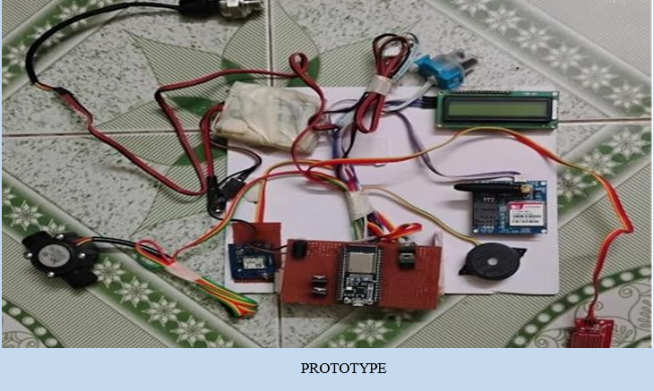

“From circuits to code, my journey is driven by curiosity and creativity.” I am a third-year Electrical and Electronics Engineering student with a growing passion for the IT field. While my academic background is rooted in electronics, my interest in coding has inspired me to explore the world of software and web development. I enjoy learning new technologies, improving my skills, and challenging myself to grow every day. In my free time, I express my creativity through drawing, which helps me think differently and stay inspired. I believe in continuous learning and strive to build a strong foundation for my future in the IT industry.
Java, Data Structures
HTML, CSS, Basic Web Development
Artist
Urban areas often face issues like drainage blockage, water leakage, and flooding, especially during heavy rainfall. Manual monitoring is inefficient and delays in detection can lead to serious damage.
Developed an IoT-based drainage monitoring system using ESP32 and sensors to monitor water levels and flow in real time. The system detects overflow and leakage conditions and sends instant alerts with location details using GSM and GPS, enabling faster response and reduced manual effort.
ESP32, Water Level Sensor, Flow Sensor, GSM, GPS, IoT

📈 Currently learning Java(OOPs concept) and Data Structures to become a software developer.
✉️Email:shruthi13112005@gmail.com
📞Phone:+91 8925354092
🔗Linkedin:www.linkedin.com/in/shruthi-s-103bb92b6